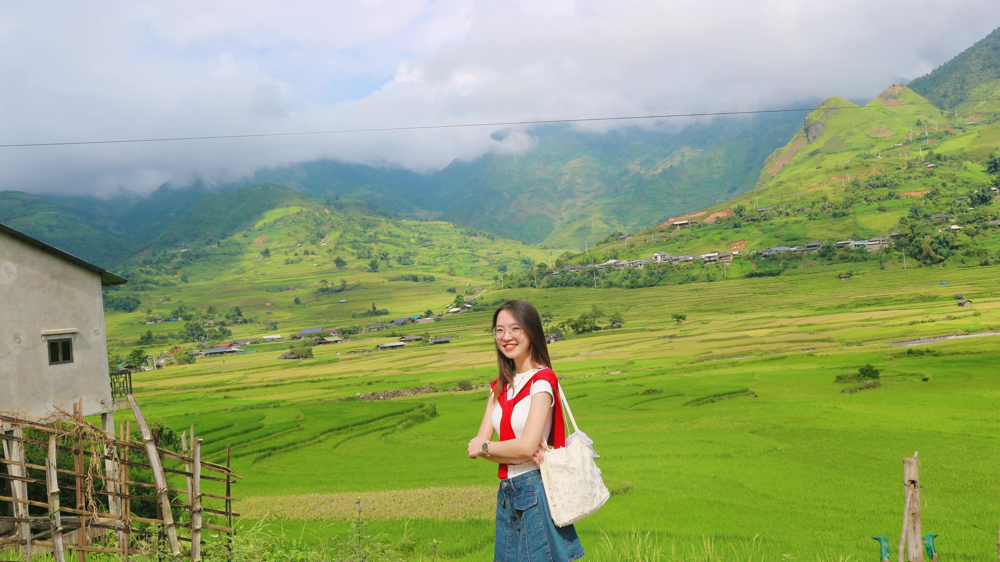
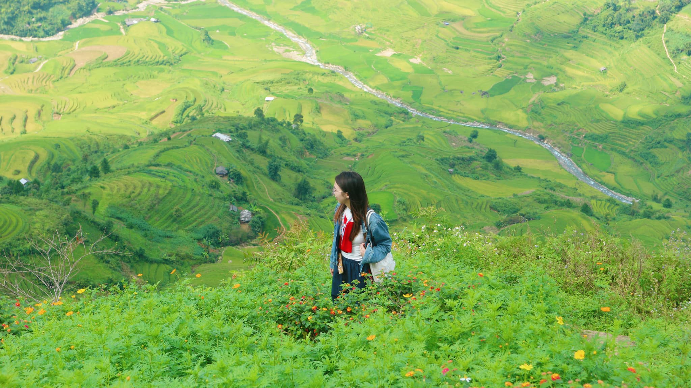
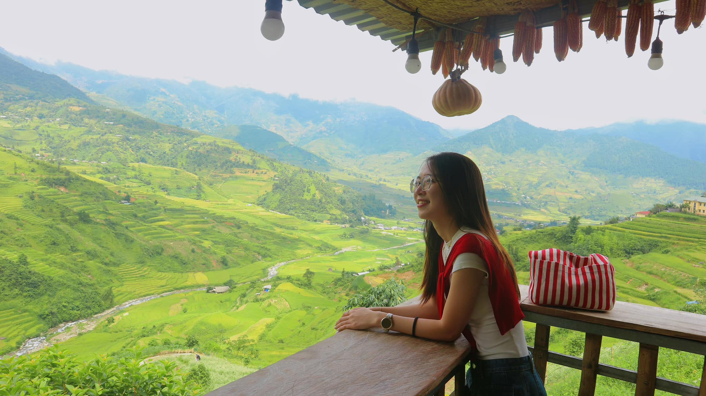
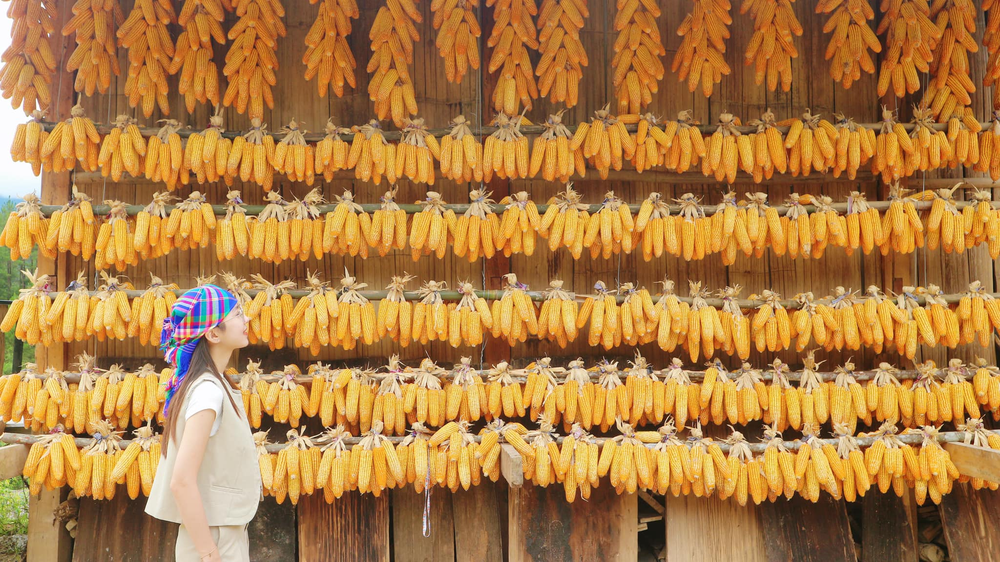
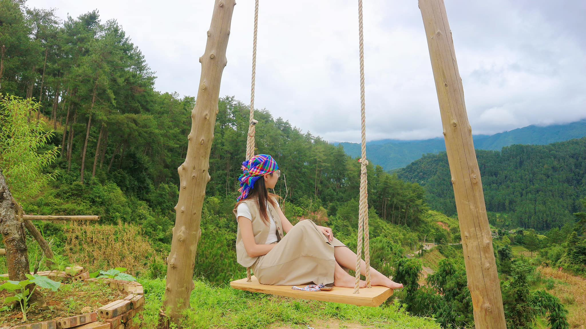
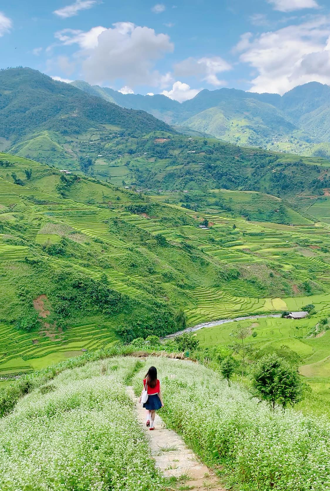
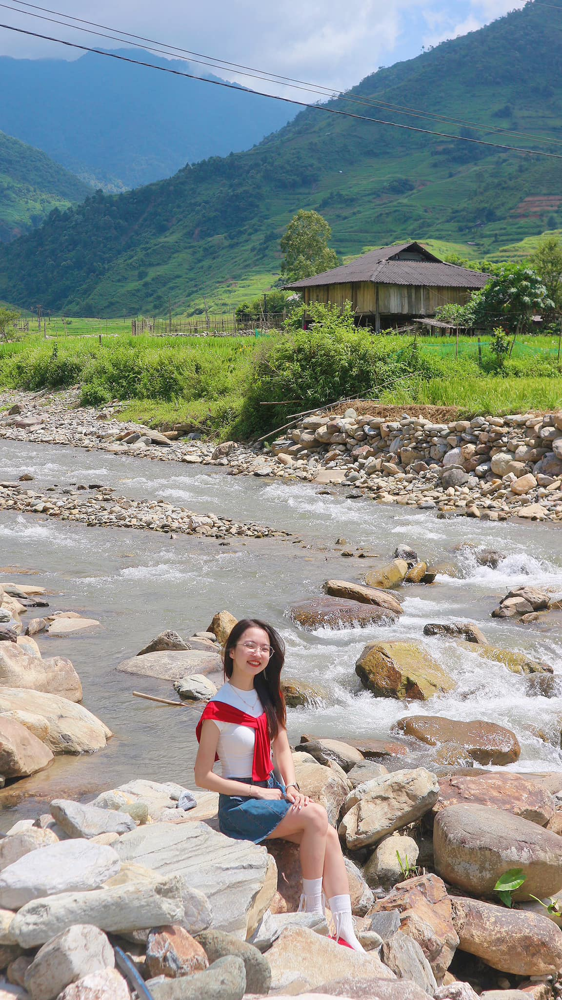
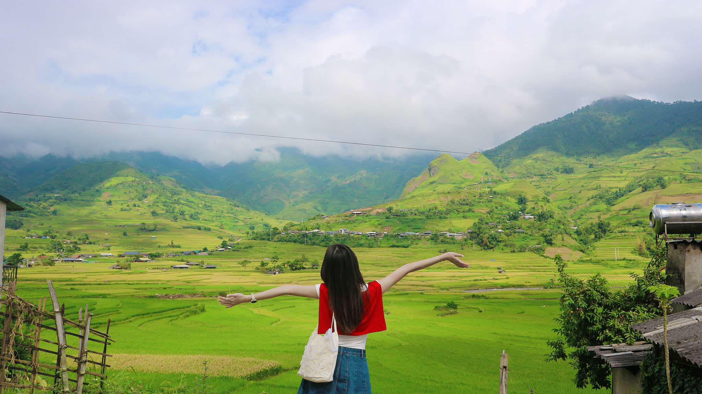
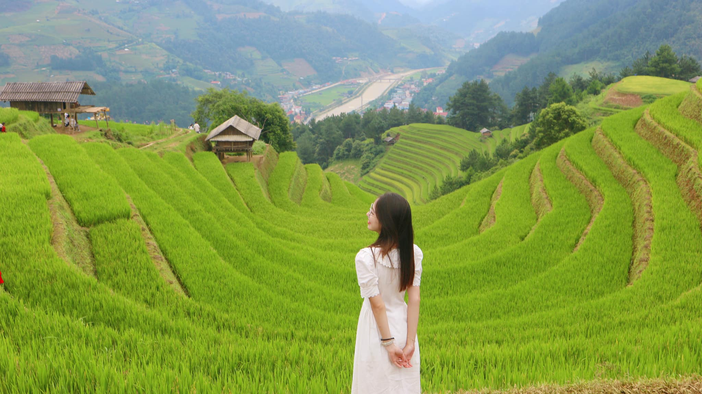

Trang chủ/Du khảo
Du khách đã có thể đến Mù Cang Chải trải nghiệm mùa lúa chín
Thứ ba, ngày 17/09/2024 06:50 AM(GMT+7)
Phòng Văn hóa thông tin huyện Mù Cang Chải cho biết, đợt bão lũ vừa qua trên địa bàn huyện có một số điểm bị sạt trên các tuyến đường, hiện các điểm sạt này đã được khắc phục. Du khách đã có thể đến Mù Cang Chải du lịch, trải nghiệm mùa lúa chín.
Mù Cang Chải sẽ là điểm đến hot nhất ở miền Bắc vào cuối tháng 9 cho đến giữa tháng 10. Và đây là lịch trình đi đến vùng đất tuyệt đẹp này với chi phí khá thấp.
Nguyễn Thu Hà, 22 tuổi, hiện sống và làm việc Hà Nội đã có chia sẻ rất chi tiết về lịch trình chuyến đi Mù Cang Chải 3 ngày 2 đêm chỉ hết 1.840.000 đồng. Trong đó tiền ở hết 300.000 đồng, đi lại hết 1.040.000 đồng, vé vào các điểm tham quan hết 80.000 đồng và ăn uống 425.000 đồng.
Thu Hà với khung cảnh Mù Cang Chải – đây là điểm đến hot nhất vùng núi Tây Bắc trong tháng 9 và tháng 10 hàng năm.
Về tình hình lúa chín, Hà cho biết: các bản Lìm Mông, Ít Thái cấy sớm hơn nên người dân sẽ gặt vào cuối tháng 9. Đồi Mâm Xôi hiện nay lúa xanh chưa lên đòng, có thể đón du khách đến cuối tháng 9. Đồi Móng Ngựa lúa đã lên cao, ngả vàng nên khả năng sẽ gặt vào giữa tháng 10. Lúa ở La Pán tẩn có nơi vàng, có đoạn còn xanh nên đây vẫn là một điểm lý tưởng để du lịch cho đến cuối mùa.
Lúa đã bắt đầu có chỗ ngả vàng ở bản Lìm Mông.
Về di chuyển: Thu Hà đặt xe giường nằm với giá vé 300.000 đồng (đó là ngày lễ, nếu ngày thường giá vé là 250.000 đồng. Lên đến Mù Cang Chải, Hà cùng bạn thuê xe máy ngay tại homestay với giá 150.000 đồng.
Về ở, Hà chọn homestay A Páo H’mông, giá chỉ 300.000 đồng/đêm.
“Homestay nằm trên một quả đồi, đường dẫn vào trung tâm xã La Pán Tẩn, cách chợ Ngã Ba Kim khoảng 500m. Anh chị chủ khá nhiệt tình và thật thà, không gian tốt. Vì homestay còn mới nên nhiều dịch vụ của anh chị chưa thực sự chỉn chu như nhiều home mình từng ở nhưng vẫn xứng đáng để lưu trú với giá cả phải chăng và sự mến khách. Anh chủ home xuống tận ngã ba đón và đưa tụi mình lên home lúc 4h sáng, giờ giấc check in, check out rất linh hoạt”, Hà chia sẻ.
Homestay có góc nhìn rất đẹp, với mức giá khá rẻ so với nhiều nơi khác.
Mỗi góc tại đây đều có thể cho ra một bức ảnh đẹp.
Chiếc xích đu đơn giản ở homestay nhìn ra núi đồi mênh mông.
Về lịch trình: Ngày đầu tiên Hà đi đèo Khau Pha - bản Ít Thái - bản Lìm Mông - Tú Lệ.
Hà cho biết: “Đèo Khau Phạ kéo dài dọc QL32. Chúng mình có dừng check-in tại điểm nhảy dù nhưng vì sớm, trời còn dày sương nên không chụp ảnh vườn hoa ở đây luôn mà đợi chiều quay lại”.
Ruộng lúa bậc thang dưới chân đèo Khau Phạ.
Lối đi lãng mạn ngay vườn hoa của một trong tứ đại đỉnh đèo Tây Bắc.
Bản Ít Thái: Từ hướng đèo Khau Phạ đi xuống, tìm cầu Ít Thái sẽ tới được bản. Thu Hà cho biết bản Ít Thái có một con suối đẹp mê mẩn, nếu ai thích mơ mộng thì đến đây quả là rất lý tưởng.
Con suối ở bản Ít Thái. Mù Cang Chải có điểm khác biệt về ruộng bậc thang là ruộng sẽ dọc theo các con suối trải dài lên đến đỉnh núi, tạo thành những bức tranh phong cảnh mềm mại và kỳ vĩ.
Bản Lìm Mông: Hà cho biết, từ Ít Thái qua Lìm Mông chỉ khoảng 2km song đường dốc, nhỏ, gồ ghề. Nhưng cảnh sắc thì không có gì để chê. Khu vực Ít Thái - Lìm Mông lúa cấy sớm, đang bắt đầu ngả vàng cực kì đẹp.
Bản Ít Thái bình yên, hoang sơ và thơ mộng.
Tú Lệ: Từ Lìm Mông đi theo chỉ đường, cô ra đường QL32 và xuôi xuống Tú Lệ. Tại đây, mọi người dừng check-in tại điểm hẹn Mù Cang Chải và ghé mua cốm ngay đối diện. “Người dân ở đây thân thiện và rất nhiệt tình. Mình có xin chị cho giã cốm thử mà rất khó giã nhé. Nhìn các chị các cô làm thì rất đẹp”, Thu Hà rất ấn tượng với Tú Lệ.
Điểm hẹn Mù Cang Chải trên Quốc lộ 32.
Đồi Mâm Xôi có giá vé vào là 30.000/người. Để lên được đồi, mọi người gửi xe bên dưới và thuê xe ôm chở lên. Giá thuê 100.000/người/xe khứ hồi. Đường lên dốc rất cao, nhất là lúc xuống. Các anh xe ôm tay lái rất chắc.
Đồi Mâm Xôi lúa đang non.
“Mình nghe nói Mâm Xôi bé đẹp và vắng hơn nhiều nhưng vì ở đồi to đến tận trưa nên chúng mình không đi được. Mọi người có thể tham khảo thêm điểm này nhé”, cô nhắn nhủ.
Đồi Móng Ngựa nổi tiếng trong giới nhiếp ảnh và đam mê du lịch Tây Bắc.
Đồi Móng Ngựa cách Mâm Xôi không xa, giá vé 30.000 đồng/lượt. Đường lên Móng Ngựa dốc và cua kinh khủng hơn cả Mâm Xôi. Thu Hà cho biết cô nhìn nhiều anh xe ôm lái còn loạng choạng vì dốc nhưng may mắn nhóm của cô toàn gặp được anh xế xịn.
Ngày 3: Dạo chơi ở La Pán Tẩn
Ở lại thêm một đêm sau khi tham quan các điểm chính, nhóm của Hà dành buổi sáng hôm sau để đi sâu vào trung tâm xã La Pán Tẩn. Khu vực này có cầu, có suối và khu ruộng bậc thang cũng đáng để check-in với chòi gỗ. Nhóm không lên tận cao ngắm cảnh vì không muốn đi quá xa vì cảnh ngay gần cũng đã rất đẹp.
“La Pán Tẩn lúa cũng cấy sớm, đã bắt đầu ngả vàng. Nằm trên đồi và là điểm ít khách lui tới tham quan nhưng những thửa ruộng bậc thang ở đây đẹp không thua kém bất cứ nơi nào
Nhóm mình đi đều đánh giá cao cung Lìm Mông - Ít Thái hơn. Các điểm này mọi người đi trong tháng 9 thì nhất định phải ghé nhé. Sau khi lúa gặt thì sẽ không đẹp nữa. Tụi mình mê ly 2 bản này phần vì lúa đang vào độ đẹp, phần vì ít khách du lịch và mọi thứ vẫn còn đơn sơ, yên bình”, Thu Hà kết luận.
Sau chuyến đi, cô gái cũng rút ra được một số lưu ý khi đi Mù Cang Chải mùa này: - Thời tiết: Khí hậu ở Mù Cang Chải khá mát mẻ cả ngày cũng như đêm. Đêm xuống nhiệt độ hạ thấp, phải đắp chăn bông luôn. Khi đi bạn nhớ chuẩn bị quần áo thu.
Mọi người nên mang thêm áo khoác nhẹ khi lên Mù Cang Chải.
- Nếu ở tại Ngã Ba Kim khá thuận lợi cho việc di chuyển theo 2 cung như Hà. Tuy nhiên, đồ ăn ở đây không đặc sắc.
- Nếu lưu trú khu vực Ngã Ba Kim thì các tuyến di chuyển đều không quá xa, không nhất thiết phải đi sớm quá. Ngày đầu nhóm Hà từ 7h sáng và do sơ suất không kiểm tra kĩ khoảng cách, chưa hình dung được đường xá nên bị dính sương mù cũng khá nguy hiểm trên đèo Khau Phạ.
- Dọc trục đường chính QL32 đường đi không quá thử thách, nhưng có cung đường đèo và tính chất đường núi nên cẩn thận những khúc cua là sẽ ổn.
- Một số điểm được nhiều người đi nhưng nhóm Hà bỏ qua, mọi người có thể tham khảo: Sống lưng khủng long, rừng trúc, Đồi Mâm Xôi bé, mỏm đá Kim Nọi.